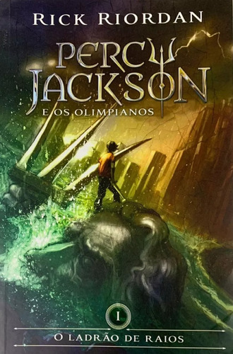

Percy Jackson o ladrão de raios-Rick Riordan
O livro Percy Jackson de Rick Riordan conta a história de Percy Jackson que é um adolescente comum que descobre ser um semideus, filho de Poseidon, um dos deuses do Olimpo. Após ser acusado de roubar o raio de Zeus, Percy parte em uma missão para recuperá-lo e provar sua inocência. Ao lado de seus amigos Annabeth e Grover, ele enfrenta monstros e deuses da mitologia grega em uma emocionante jornada pelo mundo dos deuses.
Trono de vidro-Sarah J. Maas

Trono de Vidro, escrito por Sarah J. Maas, é o primeiro livro da série de mesmo nome. A história é ambientada em um reino fictício chamado Adarlan. O livro conta a história de Celaena Sardothien, uma jovem assassina altamente habilidosa e temida, que foi aprisionada e enviada para uma mina de sal. O enredo começa quando Celaena é retirada da mina para competir em um torneio para se tornar a campeã do rei, um cargo que lhe permitiria ganhar sua liberdade após um certo período de serviço. Durante a competição, que envolve uma série de desafios mortais, Celaena enfrenta não apenas outros competidores, mas também conspirações e mistérios que ameaçam o reino.
1984-George Orwell

1984, escrito por George Orwell, é um romance distópico que se passa em um futuro totalitário onde o governo, liderado pelo Partido, exerce um controle absoluto sobre todos os aspectos da vida dos cidadãos.O livro conta a história de Winston Smith, a história se desenrola na superpotência conhecida como Oceania, onde o líder supremo, Big Brother, é uma figura onipresente que simboliza a vigilância constante e a opressão. O protagonista, Winston, trabalha no Ministério da Verdade, onde sua tarefa é reescrever documentos históricos para que estejam de acordo com a versão oficial do Partido. Smith começa a questionar o regime totalitário e busca uma forma de rebelar-se contra a opressão. Ele inicia um romance secreto com Julia, uma colega de trabalho, e juntos tentam encontrar maneiras de desafiar o sistema.
O pequeno príncipe-Antonie de Saint-Exupéry

"O pequeno príncipe"escrito por Antoine de Saint-Exupéry, é um famoso livro da literatura infantil. O livro narra acontecimentos vividos por um menino originário do asteroide B-612. Após a queda de um avião no deserto do Saara, o piloto faz amizade com essa sábia criança, que lhe conta diversas de suas aventuras e seus conhecimentos e os seus encontros com personagens peculiares.
Vidas secas-Grasciliano Ramos

Vidas Secas, escrito por Graciliano Ramos, é um dos romances mais importantes da literatura brasileira e faz parte do ciclo de obras que exploram a vida no sertão nordestino. Publicado em 1938, o livro retrata a dura realidade da seca e da pobreza através da história de uma família de retirantes. A trama segue a jornada de uma família composta por Fabiano, sua esposa Sinhá Vitória, seus dois filhos e a cadela Baleia. Eles vivem no sertão, uma região árida e castigada pela seca, e são forçados a migrar constantemente em busca de melhores condições de vida. O romance apresenta uma visão crítica e realista das dificuldades enfrentadas pelos personagens, como a fome, a opressão social e a luta pela sobrevivência.